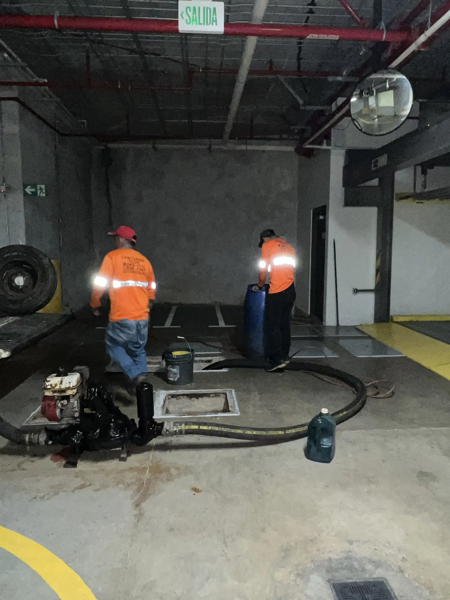

Trampas de grasa y diesel
La grasa acumulada es la causa número uno de tuberías tapadas en una cocina, y una trampa saturada trae malos olores y problemas sanitarios. Damos mantenimiento con la frecuencia que cada operación necesite, fuera del horario de atención al público.

Trampa de grasa y tanque de grasa no son lo mismo
Se confunden todo el tiempo y el precio es distinto, así que conviene saber cuál tiene.
- Trampa de grasaLa caja que va bajo la pila o afuera de la cocina, que separa la grasa antes de que entre a la tubería. Es la más común en sodas y restaurantes
- Tanque de grasaMás grande, para operaciones de más volumen: comedores industriales, hoteles, plantas. Lleva bastante más trabajo
- Trampa de dieselEn talleres y estaciones de servicio, separa hidrocarburos antes de que lleguen al drenaje
¿Cuánto cuesta limpiar una trampa de grasa?
El IVA va incluido. Lo que cambia el monto es el tipo de trampa (una trampa de cocina y un tanque de grasa son trabajos distintos) y el volumen de la operación.
Preguntas frecuentes
¿Cada cuánto hay que limpiar la trampa de grasa?
Depende del volumen de la cocina. Una soda pequeña puede aguantar cada dos o tres meses; un restaurante con mucho movimiento necesita mensual o quincenal. Si nos cuenta su operación le recomendamos una frecuencia concreta y se la dejamos calendarizada.
¿Pueden venir cuando el local esté cerrado?
Sí, y es lo que recomendamos. Atendemos 24/7 y trabajamos de noche, de madrugada o el día de cierre, para no interrumpir la atención al público. No se cobra distinto.
¿Dan factura para la contabilidad?
Sí, facturación formal a nombre de la empresa. Muchos clientes la necesitan para el control sanitario y para deducir el gasto.
¿Se llevan la grasa?
Sí. Sale en el camión, no queda nada en el local, y se transporta para su disposición correspondiente.
Dónde damos este servicio
El Gran Área Metropolitana es nuestra zona de trabajo diaria: ahí el camión llega rápido y, en una emergencia, el mismo día. Fuera del GAM también vamos, coordinando la fecha según la ruta.
- HerediaHeredia, San Joaquín de Flores, Belén, Santo Domingo, San Pablo, Barva, San Rafael, San Isidro y Santa Bárbara.
- AlajuelaAlajuela centro, Río Segundo, La Garita, San Antonio del Tejar y Atenas.
- San JoséSan José centro, Escazú, Santa Ana, Tibás, Moravia, Goicoechea, Montes de Oca y Curridabat.
- Resto del paísGuanacaste, Puntarenas, Limón, Zona Norte y Zona Sur, coordinando la visita.
Sepa el precio antes de que salga el camión
La cotización no tiene costo ni compromiso. El cotizador se la calcula en un minuto y le deja el documento con su número.
O llame al 2440-1110. Atendemos 24/7, también fines de semana y feriados.